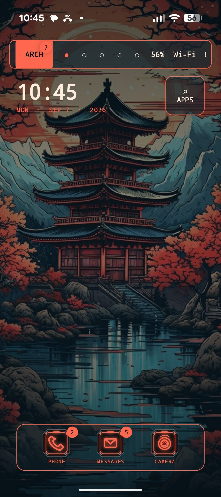

01
Five live workspaces
Swipe through dedicated spaces for your desktop, controls, ARCHAMP, notes and system tools. Swipe up for the app drawer.
ArchDeck is a cyberdeck-inspired Android launcher built around live workspaces, a functional terminal-style lock experience, music visualization, notification intelligence, Home Assistant integration and a matching custom keyboard.

ArchDeck is designed as one connected interface rather than a collection of unrelated widgets.
Swipe through dedicated spaces for your desktop, controls, ARCHAMP, notes and system tools. Swipe up for the app drawer.
A terminal-style wake screen with a huge clock, live notification stream, weather, media, Bluetooth and system telemetry.
Local music deck with album art, playback controls, EQ and multiple beat-reactive visualizers including psychedelic feedback modes.
Unread messages, missed calls and overall notification counts appear directly in the launcher without turning the dock into clutter.
Control rooms, lights and devices from a launcher-native workspace with live connection state and sensor telemetry. Home Assistant feels built into the deck instead of bolted onto it.
A companion cyberdeck keyboard that can follow the launcher palette, with lightweight local suggestion and correction behavior.
ArchDeck can turn a launcher page into a live Home Assistant control surface: room controls, device state, sensor data and a direct jump into Home Assistant when you need the full dashboard.
The app drawer keeps the cyberdeck look while staying practical: search instantly, filter by category, and long-press apps to pin them exactly where you want them.
These are actual ArchDeck screens, not product mockups.
> launcher.mode = CYBERDECK
> workspace.count = 5
> lockdeck.status = ARMED
> notification.bus = ACTIVE
> archamp.visualizer = FEEDBACK_ENGINE
> keyboard.link = ARCHKEY
> home_assistant = CONTROL_DECK
> user.data.sale = NEVER
> aesthetic = NON_NEGOTIABLEThe visual language is inspired by terminals, industrial control panels and fictional cyberdecks, but the data is real: notifications, media state, battery, connectivity, weather and smart-home status.
ArchDeck is currently distributed directly as an Android APK.
Open the latest GitHub Release and download the current ArchDeck APK.
Android may ask you to allow installs from your browser or file manager. Enable it only for the source you trust.
Install, open ArchDeck, and select it as your Home app when Android asks.
ArchDeck is in active development. Back up anything important and review requested Android permissions before installing.
Yes. ArchDeck registers as an Android Home app, but adds its own workspace system, LockDeck presentation layer, media deck and connected modules.
No. Android still owns the secure keyguard, fingerprint and PIN authentication. LockDeck is the custom presentation layer shown around that secure system.
No. ArchDeck uses original audio-reactive renderers, including psychedelic feedback modes inspired by the classic visualizer era. It does not bundle Winamp plugin binaries.
Not by default. This repository can host the website and releases without granting an open-source license to the ArchDeck application itself.